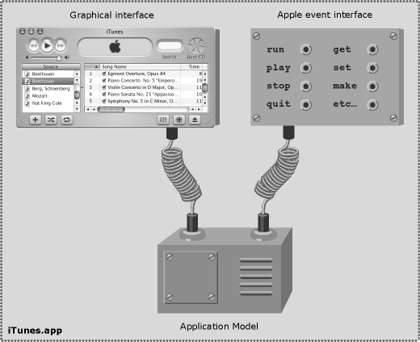
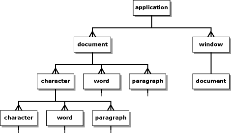

About application scripting
This chapter introduces the main concepts behind Apple event-based application scripting.
What are Apple events?
Apple events are a high-level message-based form of Interprocess Communication (IPC), used to communicate between local or remote application processes (and, in some cases, within the same process).
An Apple event contains typed data describing:
how the event should be handled, such as the event's 'name' (specified by two four-letter codes [1]) and whether or not a reply is required
any data to be passed as arguments to the event handler that receives the event.
For descriptive purposes, the former are referred to as 'attributes' and the latter as 'parameters'.
Apple event datatypes include:
*common scalar types such as booleans, integers, floats, strings, dates and file references
ordered lists
records (key-value lists where each key is an four-letter code)
object specifiers, used to construct first-class queries, commonly referred to as application references, that identify objects within an application. These query objects are roughly comparable to XPath or CSS selectors.
For example, when the user drag-n-drops a file onto TextEdit.app in the Finder, the Finder commands TextEdit to open that file by sending it an aevt/odoc event with a file reference as its main parameter:

With suitable bindings, scripting languages can also create and send Apple events. For example, when the code app('iTunes').play() is executed in a Python interpreter, a hook/Play event is sent from the interpreter to iTunes, instructing it to start playing:
Applications may respond to an incoming Apple event by sending a reply event back to the client application. The reply event may contain either a return value, if there is one, or an error description if it was unable to handle the event as requested. For example, executing the command app('TextEdit').name.get() in a JS interpreter sends TextEdit a code/getd event containing an object specifier identifying the name property of its root app (Application) object. TextEdit processes this event, then sends a reply event containing the string 'TextEdit' back to the Python interpreter, where it is displayed as the command's result. This exchange is usually performed synchronously, appearing to the user as a simple remote procedure call. Asynchronous messaging is also supported, though is not normally used in application scripting.
What is a scriptable application?
A scriptable (or 'AppleScriptable') application is an application that provides an Apple event interface intended for third-party (e.g. end-user) use. The application implements one or more event handlers that respond to corresponding events, and may also support the Apple Event Object Model. While this interface may be regarded as an API, the emphasis is on providing a high-level user interface that is peer to other users interfaces the application may have (GUI, CLI, web, etc.) and accessible to end-users as much as developers.
For example, iTunes.app implements two user interfaces, one graphical and one Apple event-based, that provide access to to much the same functionality but in very different ways:

A scriptable application also contains a built-in definition of its scripting interface in the form of an aete or sdef resource. This resource can be obtained programmatically and used:
to support automatic translation of human-readable terminology to four-letter codes in high-level bridges such as AppleScript and appscript
to generate basic human-readable documentation by applications such as Script Editor and HTMLDictionary.
(Note that the aete and sdef formats do not provide an exhaustive description of the application's scripting interface, and additional documentation is usually required - if not always provided - to form a complete understanding of that interface and how to use it effectively.)
What is the Apple Event Object Model?
The Apple Event Object Model (AEOM) is an idealised, user-oriented representation of the application's internal data model, allowing clients to identify and manipulate parts of that structure via Apple events. An incoming Apple event representing a particular command (get, set, move, etc.) is unpacked, and any object specifiers in its parameter list are evaluated against the application's AEOM to identify the user-level object(s) upon which the command should act. The command is then applied these objects, with the AEOM translating this into operations upon the application's implementation-level objects. These implementation-level objects are mostly user-data objects in the application's Model layer, plus a few GUI objects of interest to scripters (such as those representing document windows). The internal architecture of a typical scriptable desktop application might look something like this:

Note: while the Apple Event Object Model is sometimes described by third-parties as being similar to DOM, this is inaccurate as AEOM operates at a much higher level of abstraction than DOM.
AEOM objects are identified by high-level queries (comparable to XPath or CSS selectors), not low-level chained method calls.
Commands operate upon objects, so a single command may invoke multiple method calls upon multiple implementation objects in order to perform relatively complex tasks.
Where a query specifies multiple objects, the command should perform the same action on each of them [2].
AEOM objects never move across the bridge. Where a command identifies one or more AEOM objects as its result, the return value is a query (or queries) that will [hopefully] identify those objects in future, not the AEOM objects themselves.
How does the AEOM work?
The AEOM is a tree structure made up of objects. These objects may have attributes (descriptive values such as class, name, id, size, bounds; usually primitive AE types but occasionally other application objects), e.g.:
app('Finder').name
app('Finder').version
app('Finder').FinderPreferences
and may 'contain' other objects, e.g.:
app('Finder').FinderWindows
app('TextEdit').documents
However, unlike other object models such as DOM, objects within the AEOM are associated with one another by relationships rather than simple physical containment. Think of AEOM as combining aspects of procedural RPC, object-oriented object model and relational database mechanics.
Relationships between objects may be one-to-one, e.g.:
app('Finder').home
app('iTunes').currentTrack
or one-to-many, e.g.:
app('Finder').folders
While relationships often follow the containment structure of the underlying data structures, e.g.
app('TextEdit').documents
this is not always the case. For example:
app('Finder').files
app('Finder').desktop.files
app('Finder').disks.named('MacHD').folders.named('Users').folders.named('Jo').folders.named('Desktop').files
would all identify the same objects (files on the user's desktop), though only one of these references describes their position according to physical containment.
Some references may identify different objects at different times, according to changes in the application's state, e.g.:
app('iTunes').currentTrack
Object specifiers may identify objects that do not actually exist as discreet entities within the application's underlying data structures, but are interpreted on the fly as proxies to the relevant portions of implementation-level data structures, e.g.:
app('TextEdit').documents.at(1).text.characters
app('TextEdit').documents.at(1).text.words
app('TextEdit').documents.at(1).text.paragraphs
all refer to sections of data that's actually stored in a single NSTextStorage object within TextEdit's Model layer. This decoupling of the AEOM from the Model layer's structure allows applications to present data in a way that is convenient to the user, i.e. easy and intuitive to understand and use.
Finally, one-to-many relationships may be selective in identifying a subset of related elements according to their individual class or shared superclasses. For example:
app('Finder').items
identifies all objects that are a subclass of class 'item' (i.e. disks, folders, document files, alias files, etc.).
app('Finder').files
identifies all objects that are a subclass of class 'file' (i.e. document files, alias files, etc.).
app('Finder').documentFiles
identifies all objects of class 'document file' only.
Understanding the structure of an application's AEOM is key to successfully manipulating it. To illustrate the above concepts, here is the AEOM for a simple hypothetical text editor:

The program has an 'application' (app) object as its root, which in turn has one-to-many relationships with its document and window objects.
Each document object has one-to-many relationships to the characters, words and paragraphs of the text it contains, each of which in turn has one-to-many relationships to the characters, words and paragraphs of the text it contains, and so on to infinity.
Finally, each window object has a one-to-one relationship to the document object whose content it displays.
What is NodeAutomation?
NodeAutomation is a high-level JavaScript-to-Apple Event Manager bridge, intended for use by both developers and end-users. NodeAutomation architecture consists of two layers:
The low-level Apple event APIs.
NodeAutomation - a high-level user-friendly 'dynamic glue' layer, implemented as
Proxyobjects that provide a native OO-like API for constructing relational AEOM queries, while performing automatic translation between human-readable application terminology and corresponding raw AE ('four-char') codes, and converting standard JS values and objects to and from their AE equivalents.
For example, to set the size of the first character of every non-empty paragraph in every document of TextEdit to 24 pt using raw four-char codes:
app('/Applications/TextEdit.app').sendAppleEvent('#core', '#getd', {
'#----': app.elements('#docu').property('#ctxt').elements('#cpar').where(
its.ne('\n')).elements('cha ').at(1).property('#ptsz'),
'#data': 24,
});
versus application-supplied terminology:
app('TextEdit').documents.text.paragraphs.where(its.ne('\n')).characters.at(1).size.set(24)
[1] Really an OSType: a 32-bit code, often represented as a 4-character string. Used in Carbon APIs such as the Apple Event Manager. Mnemonic values are preferred, e.g. docu = 'document'. To distinguish four-char code strings, NodeAutomation prefixes a hash (#) character, e.g. #docu.
[2] Assuming a well-implemented AEOM; in practice most AEOM implementations suffer varying degrees of limitations in their ability to operate successfully on complex multi-object references. These limitations are generally not documented but discovered through trial and error.